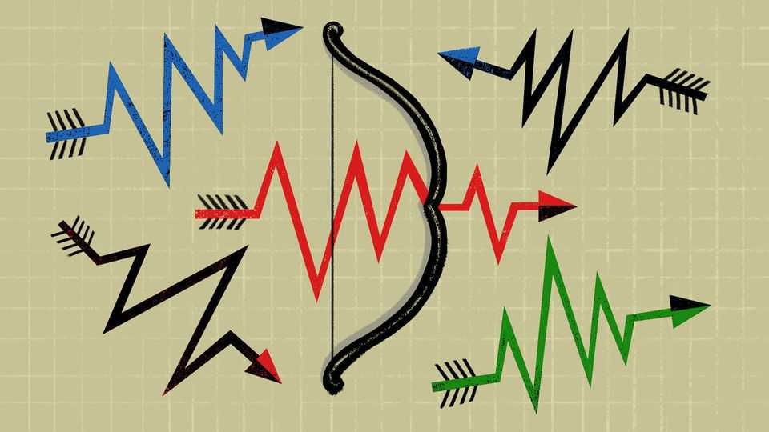

Global bullies have turned uncertainty into a weapon
America and China see profit in keeping the whole world on edge

Nov 12th 2026
IS THE STRAIT OF HORMUZ open or closed? Nobody can answer that question with confidence. The maritime choke point is not a barn door that is either open or shut. It is a place of unknown dangers for shippers, sea captains and governments. For Iran, a bankrupt, isolated mid-size rogue, engendering that uncertainty creates leverage over stronger, richer foes.
Is Russia behind recent bomb hoaxes that have alarmed European politicians and business bosses? Nobody knows, and that is also the point. Russia’s aim is not to convince adversaries to believe its twisted version of the truth. Since Soviet times, it has specialised in deniable attacks that leave others doubting whether anything is true.
So far, so roguish. Such agents of chaos as Russia and Iran have long relished their ability to keep stability-loving rivals off-balance. Today, the unwelcome shock involves America and China playing the same game. Not long ago those two giants saw an interest in upholding a stable and predictable global trading order (while bending its rules as needed). Now the two countries seem to like ambiguous rules and hard-to-enforce agreements that leave trade partners dependent on their goodwill.
To be sure, statesmen have been masters of ambiguity since they wore robes and swords, and carved treaties on stone tablets. In the modern era, what is more, America had always been careful to avoid offering hard-and-fast security guarantees to allies, lest they started foolish conflicts, believing that Uncle Sam would come to their aid.
President Donald Trump is different. He breaks new ground by treating inconstancy as his superpower. This is true in foreign policy, as he threatens to bomb countries before offering them friendship in the next breath. It is the case in trade policy, as he adjusts tariff rates and export controls on a whim. When Trump aides are asked how foreign governments or investors are supposed to agree to big, long-term deals if the terms may later change, they serenely reply that “there is a value to uncertainty.” In their telling, doubt usefully reminds foreigners that access to America’s market is a privilege, not a right. They note the advice of the president himself: if outsiders wish to avoid tariffs, all they need to do is make things in America.
In Trumpworld, American dominance is enhanced when foreigners do not know where they stand. In the context of the Ukraine war, that might involve Europeans pleading for continued access to American-made weapons or the Starlink satellite-internet system owned by Elon Musk. In future, it might involve access to the best AI models. Foreign pleading is the pay-off.
China is also breaking new ground. It spent decades tut-tutting at America’s high-handed and changeable ways. Officials in Beijing would accuse America of nagging trade partners to open their markets, only to turn round and enact export controls and other curbs before a foreign rival became too formidable a competitor. America changes the rules when it fears losing a game, they would grumble. Worse, America claims to enjoy a “long-arm jurisdiction” to enforce its laws worldwide, as Chinese legal experts complained.
The grumbling lasted until China became dominant in the production of vital industrial inputs and world-class technologies, from rare-earth elements to batteries. Just in time for Mr Trump’s uninhibited second turn at the presidency, China found itself in a position to retaliate in relative safety. In the past couple of years China has enacted its own export controls and long-arm laws to punish foreign companies if they obey American laws and sanctions that hurt China.
If a multinational firm is now paralysed with doubt, not knowing how to balance laws in America, where it is listed, with those in China, where it sources important components, that is no accident. In an echo of Mr Trump’s line—to avoid tariffs, make things in America—China has its own form of blackmail to propose. If companies wish to avoid the vaguely written, politicised rules that govern export licences for rare earths and the like, they can make products in China and export them as finished batteries or electric cars. The offer is not subtle: China-based factories have no trouble sourcing rare earths; dependence is a small price to pay.
If carrots do not work, China has sticks to use on foreigners trying to de-risk and diversify away from dependence on its supply chains. Specific rules aim to stop foreigners building up stockpiles of critical minerals, and even govern the export of machines to process and recycle them. Some Chinese controls are currently suspended as trade talks continue with America and Europe, yet hang like a sword over negotiators.
At least China is still bashful about weaponising uncertainty. Even as it keeps countries on edge, its officials insist that their government is a rule-abiding champion of globalisation and openness, though nobody actually believes this. In contrast, Trump administration officials do not pretend that their president’s word is his bond. Unblushingly, they portray his unreliability as a sign of strength and cleverness. In this, Trump-era America resembles Russia and Iran more than it does a traditional great power.
For the mark of a true rogue is to inspire fear, but not care about getting caught. On November 9th France blamed Iran’s Revolutionary Guard Corps for cyber-attacks that remotely turned freezers into ovens in hundreds of French supermarkets. The attacks were not subtle: traces of Persian were found in the hackers’ computer code. What logic guides Iran to spoil food in a French supermarket, without hiding its traces? Logic has nothing to do with it. In brutal times, sowing doubt is the win. ■